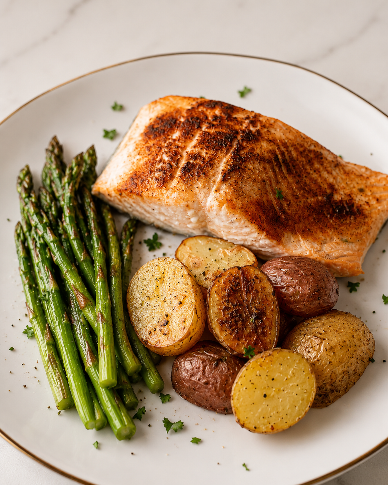

From the kitchen
Sheet pan salmon with potatoes & asparagus
One pan, blackened seasoning, and just enough hands-on time to pour a glass of water and stretch

Why this one made the rotation
This started as a five-ingredient sheet pan salmon recipe I came across online, but by the time it hit my kitchen it had turned into its own thing. I swapped in a mix of gold and red baby potatoes because that's what was in the bag at the store, hit the salmon with paprika and garlic salt instead of a plain oil-and-salt rub, and roasted the whole tray low and slow instead of blasting it at high heat. The lower temperature gives the salmon a gentler cook and the potatoes more time to actually get tender all the way through, rather than racing to catch up before the fish overcooks.
It's about as low-effort as dinner gets. Everything goes on one pan, there's no flipping or babysitting, and cleanup is a sheet of foil in the trash.
Why it works for runners
- Salmon brings protein and omega-3s, which help with the inflammation that comes with harder training blocks
- Potatoes refill glycogen without a lot of fuss - simple, familiar carbs
- Asparagus adds fiber, folate, and some volume to the plate without weighing down a recovery meal
- Low prep effort means it's realistic to actually make this after a long run, not just plan to
Ingredients (2 servings)
- 2 salmon fillets
- 1 to 1.5 lbs baby potatoes, a mix of gold and red, halved
- 1 bunch asparagus, tough ends trimmed
- 3 Tbsp olive oil, divided
- 1 tsp paprika
- 1 tsp garlic salt
- Salt and pepper, to taste
- Fresh parsley, chopped, for topping
Instructions
- Preheat oven to 375°F. Line a large sheet pan with foil.
- Toss the halved potatoes with about half the olive oil, salt, and pepper. Spread them across one side of the pan and roast for 15 minutes on their own to give them a head start, since they take longer than the salmon or asparagus.
- While the potatoes roast, pat the salmon fillets dry and rub them with the remaining olive oil, then the paprika and garlic salt, pressing gently so it sticks.
- After the potatoes' head start, pull the pan out and add the salmon fillets and asparagus to the open space, tossing the asparagus with a little olive oil, salt, and pepper as it goes on.
- Return to the oven and roast for another 15 to 20 minutes, until the salmon flakes easily with a fork and the potatoes are fork-tender. Since this runs at a lower temperature than a typical sheet pan recipe, it's more forgiving if your oven runs a few minutes long.
- Top with fresh parsley before serving.
A few notes from making this a bunch of times
- Give the potatoes a head start. They're the slowest thing on the pan by a wide margin. Skipping this step is the most common way to end up with either undercooked potatoes or overcooked salmon.
- Low and slow is genuinely more forgiving. Roasting at 375°F instead of blasting at 425°F+ gives you more room for error if you get distracted for five minutes, which, if you're anything like me after a run, you probably will.
- Pat the salmon dry first. Same principle as the chickpeas in the curried sheet pan bowls - moisture on the surface fights the sear instead of helping it.
- Leftovers hold up well. The salmon reheats fine in a low oven or toaster oven; microwaving works too if you're not precious about texture.

Adapted loosely from a five-ingredient sheet pan salmon recipe I found online - swapped potatoes, added paprika and garlic salt to the fish, and roasted low instead of hot. Barely resembles the original at this point, but that's kind of how most of my "recipes" end up.